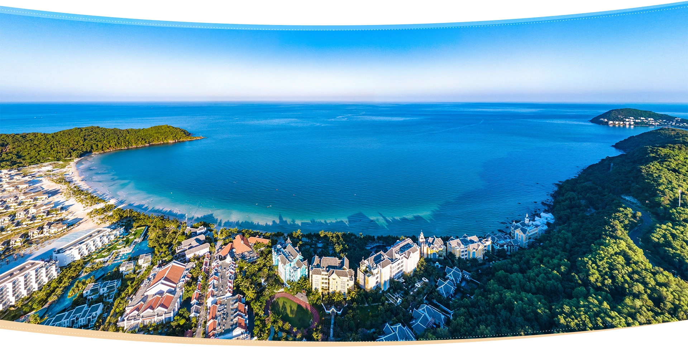
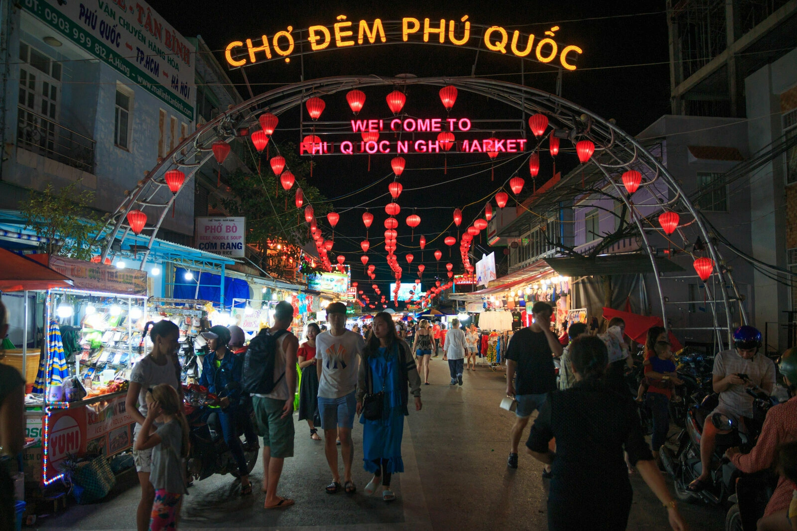
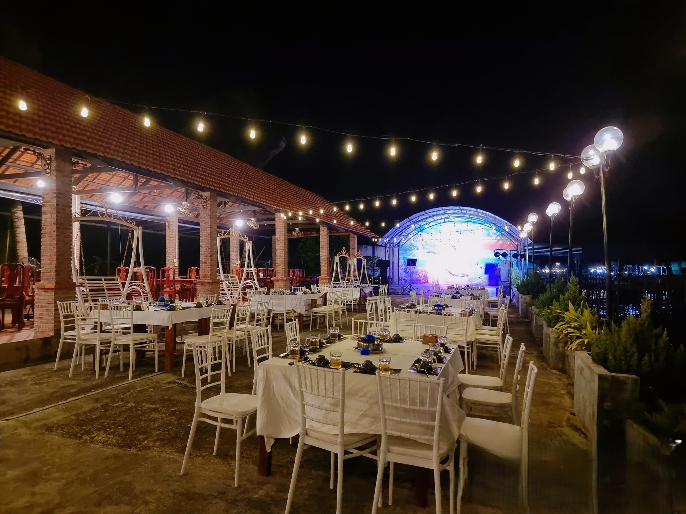
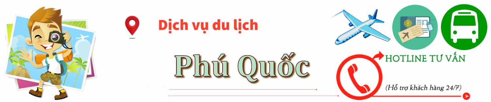

Thời Điểm
- ☀️ Tháng 11 – Tháng 4 Mùa khô, trời nắng đẹp, biển xanh trong, ít mưa
- 👉 Tốt nhất: Từ tháng 12 đến tháng 3 — thời tiết đẹp nhất trong năm.
- 🌦 Tháng 5 – Tháng 10 Mùa mưa, vé máy bay & phòng rẻ, nhưng có thể mưa bất chợt

🌟 Điểm đến nổi bật ở Phú Quốc
- 🏖️ Bãi Sao, Bãi Dài Tắm biển, thư giãn với cát trắng, nước trong
- 🚠 Cáp treo Hòn Thơm Dài nhất thế giới, ngắm biển từ trên cao
- 🏝 Hòn Móng Tay, Hòn Gầm Ghì, Hòn Xưởng Lặn ngắm san hô, tour 4 đảo
- 🕌 Dinh Cậu, chùa Hộ Quốc Tâm linh và ngắm hoàng hôn
- 🐠 VinWonders + Safari Phú Quốc Công viên giải trí, vườn thú bán hoang dã
- 🌅 Sunset Sanato Beach Club Chill biển, chụp ảnh hoàng hôn đẹp nhất đảo

🛏️ Khách sạn & homestay
- ⭐ Cao cấp (5 sao) JW Marriott Phu Quoc, InterContinental, Vinpearl Resort
- 🏝 Resort ven biển 4 sao Lahana Resort, Seashells Hotel, Famiana Resort
- 👨👩👧👦 Resort cho gia đình Mövenpick Phu Quoc, Premier Residences
- 🏠 Homestay đẹp, giá hợp lý 9Station Hostel, Phu House, Sen Lodge Bungalow

🍜 Ẩm thực Phú Quốc
- 🦀 Ghẹ Hàm Ninh Quán Biển Xanh, nhà bè Hàm Ninh
- 🍜 Bún quậy Kiến Xây Cực nổi tiếng – tự trộn, nước dùng trong
- 🍲 Lẩu hải sản / nướng BBQ Xin Chào Restaurant, Ra Khơi, Hương Biển
- 🦞 Nhum nướng, cá sòng nướng Chợ đêm Dinh Cậu

Dịch vụ hỗ trợ
Là nơi bạn có thể liên hệ để được hỗ trợ, tư vấn, phản ánh hoặc giải quyết các vấn đề liên quan đến hoạt động du lịch khi đến Phú Quốc.- 📞Tổng đài hỗ trợ du lịch Kiên Giang 0297 3828 188
- 🚓 Công an TP. Phú Quốc 0297 3980 112
- 🚑 Bệnh viện Đa khoa Phú Quốc 0297 3846 961 – 127 Đường 30/4, TT Dương Đông
- 🧭 Trung tâm hỗ trợ du khách Có tại sân bay Phú Quốc và bến tàu
- 📱 App tham khảo Google Maps, Zalo, PhuQuocGo, TripAdvisor
💡 lưu ý:
- 🧴 Chống nắng kỹ vì nắng biển khá gắt.
- 🐠 Nếu đi tour 4 đảo: nhớ mang đồ bơi, khăn, kính bơi, thuốc say sóng.
- 💳 Nhiều nơi không nhận thẻ – nên chuẩn bị tiền mặt.
- 🚗 Đi lại: thuê xe máy (~120–150k/ngày) hoặc đặt taxi/Grab.
- 📸 Có rất nhiều điểm sống ảo đẹp – nhớ sạc đầy pin điện thoại!